Gallery: Distributions
Source:vignettes/articles/gallery-distributions.Rmd
gallery-distributions.RmdDistributions describe how values spread out. plotit’s distribution marks reveal shape, tails, and relationships — from histograms and densities to ECDFs, QQ plots, and bivariate binning.
Histograms
Histogram with 30 bins
mark_histogram() bins a continuous variable and counts
observations per bin. The bins argument controls the
resolution.
faithful |>
plotit(encode(x = eruptions)) |>
mark_histogram(bins = 30)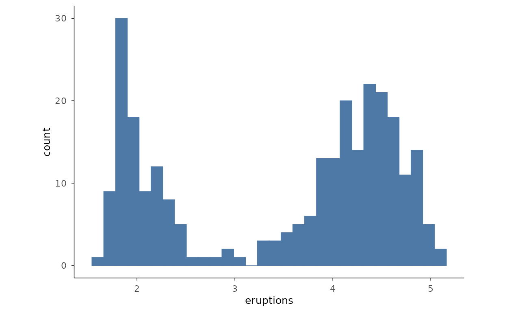
Histograms by group
Filling by a categorical variable and lowering alpha lets several
histograms overlap on one panel. A small subset of mpg
classes keeps the comparison readable.
mpg2 <- ggplot2::mpg[ggplot2::mpg$class %in% c("compact", "suv", "pickup", "subcompact"), ]
mpg2 |>
plotit(encode(x = hwy, fill = class)) |>
mark_histogram(bins = 20, alpha = 0.5)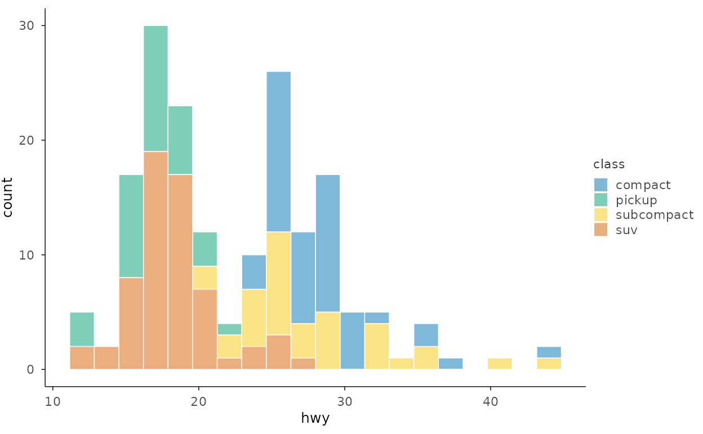
Densities
Density with custom bandwidth
mark_density() estimates a smooth kernel density. The
bandwidth bw (passed through ...) trades
smoothness against detail — smaller values follow the data more
closely.
faithful |>
plotit(encode(x = eruptions)) |>
mark_density(bw = 0.15, alpha = 0.6)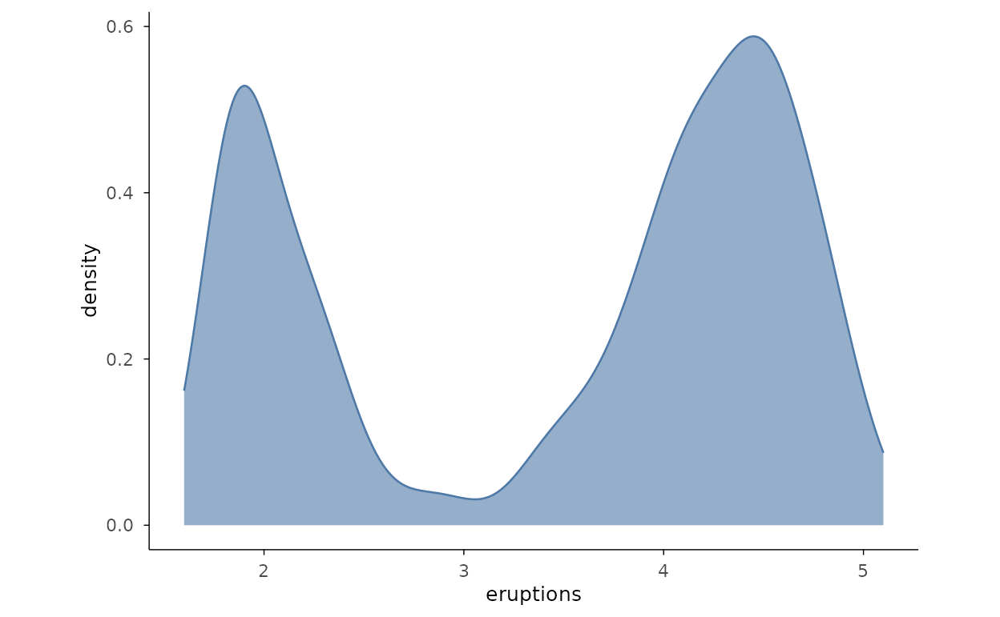
Density by group
Coloured density curves overlay several groups for direct shape comparison.
iris |>
plotit(encode(x = Sepal.Length, colour = Species)) |>
mark_density()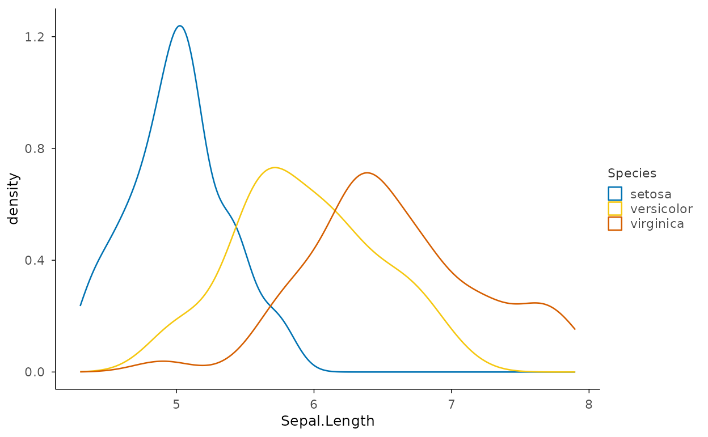
Histogram and density overlay
Rescale the histogram with after_stat(density) so the
bars and the density curve share the same y scale.
faithful |>
plotit(encode(x = eruptions)) |>
mark_histogram(mapping = encode(y = ggplot2::after_stat(density)), bins = 30, alpha = 0.5) |>
mark_density(bw = 0.15)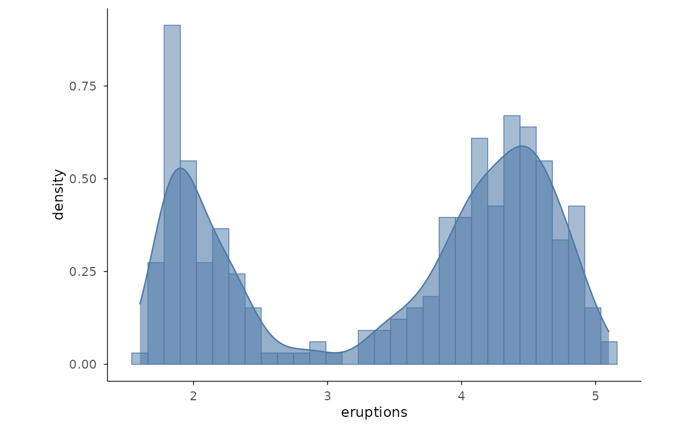
Cumulative Distributions
Empirical CDF
mark_ecdf() draws the empirical cumulative distribution
function as a step with no binning to choose — every point is
represented exactly.
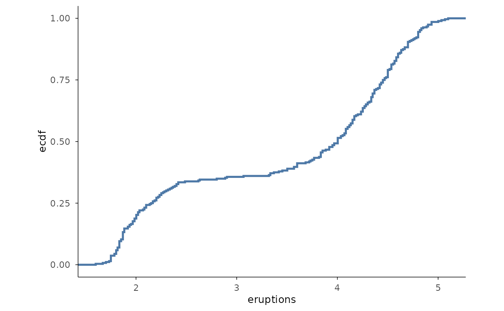
Quantile-Quantile Plots
QQ plot with normal reference
mark_qq() plots sample quantiles against the theoretical
quantiles of a distribution; mark_qq_line() adds the fitted
reference line. Deviations from the line signal departures from
normality.
faithful |>
plotit(encode(x = eruptions)) |>
mark_qq() |>
mark_qq_line()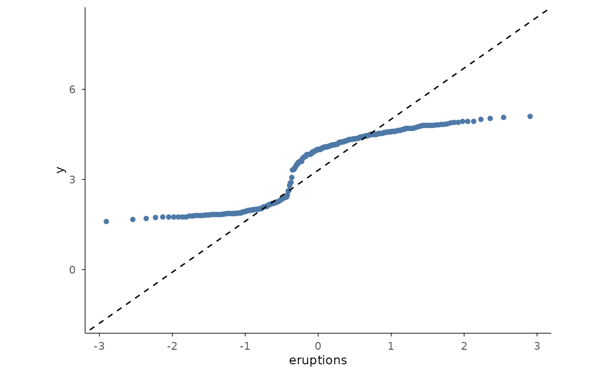
QQ plot with exponential reference
Pass distribution to check against any theoretical
distribution — here "exp" for data simulated from an
exponential. Both the points and the line must use the same
distribution.
set.seed(42)
rex <- data.frame(value = rexp(200))
rex |>
plotit(encode(x = value)) |>
mark_qq(distribution = "exp") |>
mark_qq_line(distribution = "exp")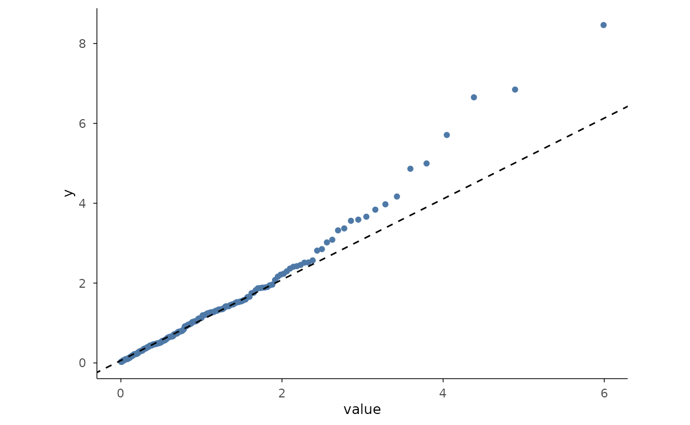
Bivariate Distributions
2D density contours
mark_density_2d() draws contour lines of a
two-dimensional kernel density — here the classic faithful
eruptions/waiting relationship.
faithful |>
plotit(encode(x = eruptions, y = waiting)) |>
mark_density_2d()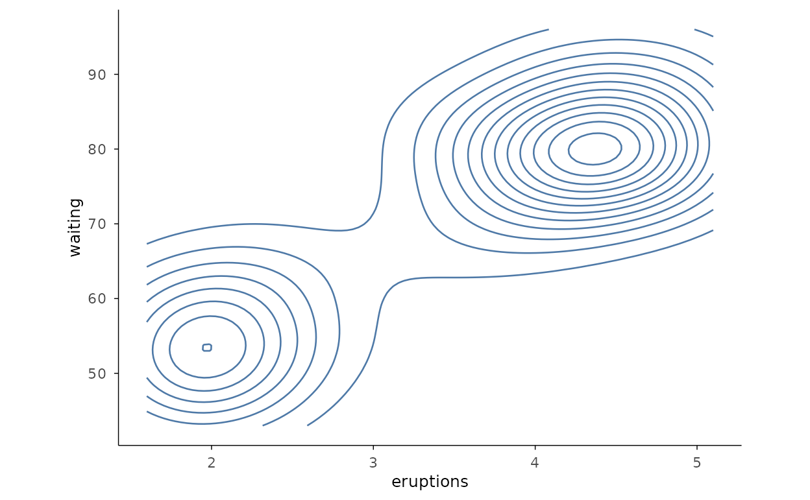
Filled 2D density
With filled = TRUE the contour bands are filled, giving
a topographic view of where the density is highest.
faithful |>
plotit(encode(x = eruptions, y = waiting)) |>
mark_density_2d(filled = TRUE, bins = 10)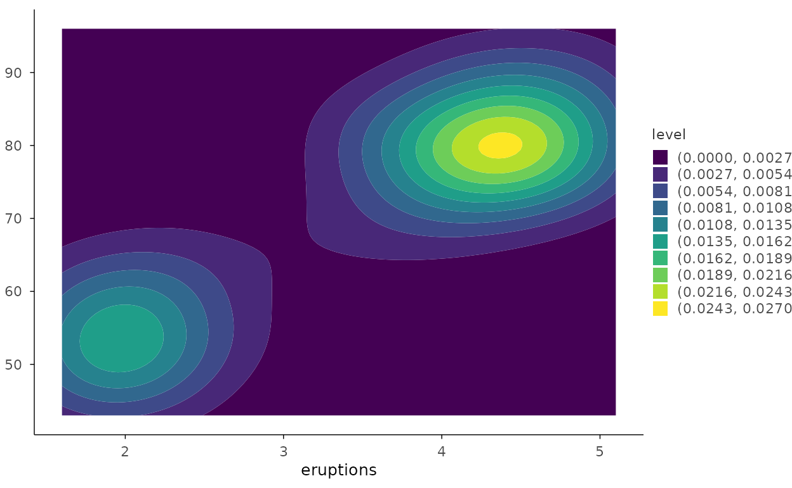
Bin 2D
mark_bin2d() tiles the plane into a rectangular grid of
counts — a clean way to visualise overplotting in dense data.
set.seed(1)
dmid <- ggplot2::diamonds[ggplot2::diamonds$carat < 2, ]
dmid |>
plotit(encode(x = carat, y = price)) |>
mark_bin2d(bins = 20)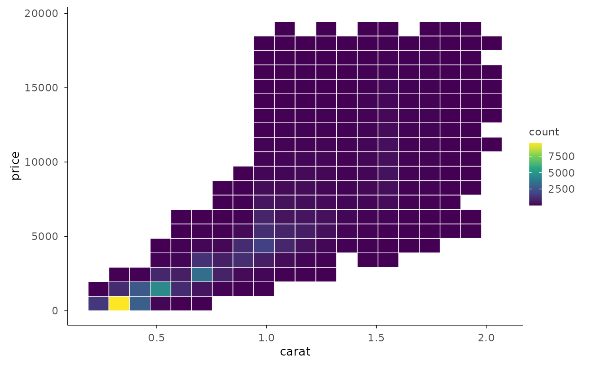
Hexbin
mark_hex() bins into hexagons instead of squares, which
avoids the visual bias of axis-aligned rectangles.
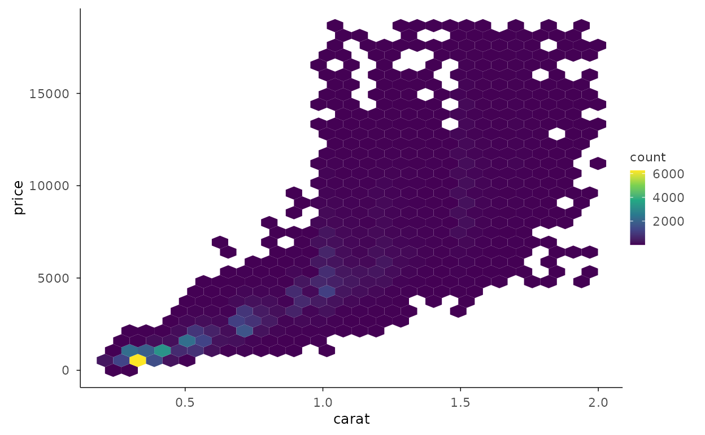
Distribution Details
Density with rug
mark_rug() adds a tick per observation along the axis,
recovering the exact data positions that a smooth density can hide.
faithful |>
plotit(encode(x = eruptions)) |>
mark_density() |>
mark_rug(sides = "b", color = "grey30")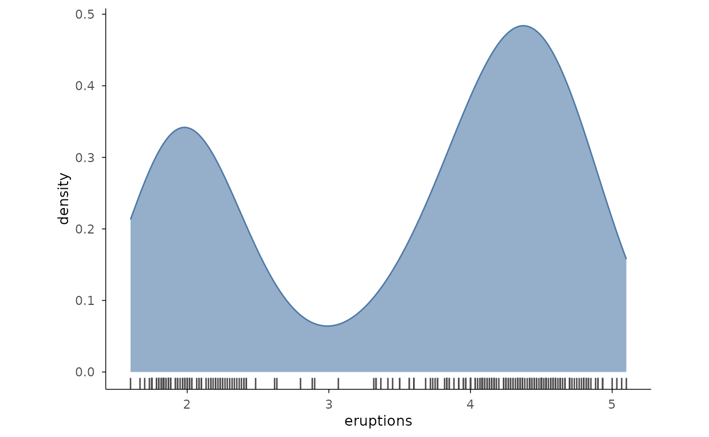
Faceted histograms
split_wrap() repeats the histogram for each group in its
own panel, avoiding the overlap of stacked or dodged bins.
ggplot2::mpg |>
plotit(encode(x = hwy)) |>
mark_histogram(bins = 20) |>
split_wrap(drv, ncol = 3)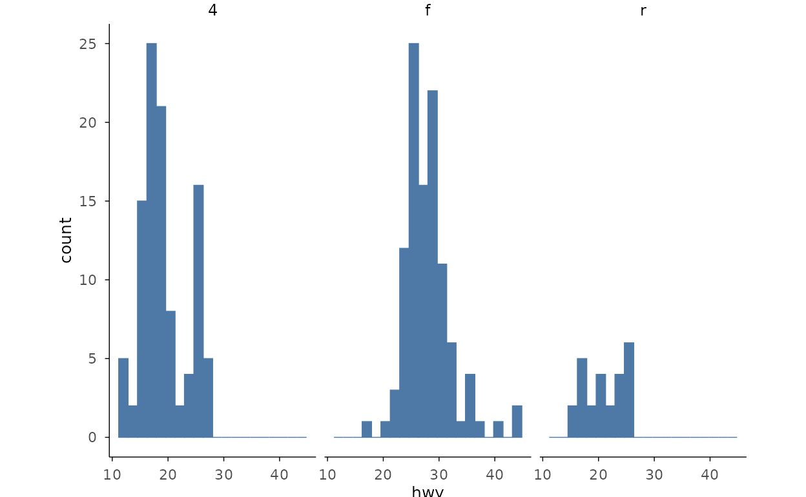
Mean with standard error
Summarise groups into means with error bars for the standard error of
the mean. mark_errorbar() takes
ymin/ymax alongside y; the point
shows the mean.
se <- function(x) sd(x) / sqrt(length(x))
grpm <- data.frame(
Species = levels(iris$Species),
mean = tapply(iris$Sepal.Length, iris$Species, mean),
sem = tapply(iris$Sepal.Length, iris$Species, se)
)
grpm |>
plotit(encode(x = Species, y = mean, ymin = mean - sem, ymax = mean + sem)) |>
mark_point(size = 3) |>
mark_errorbar(width = 0.2)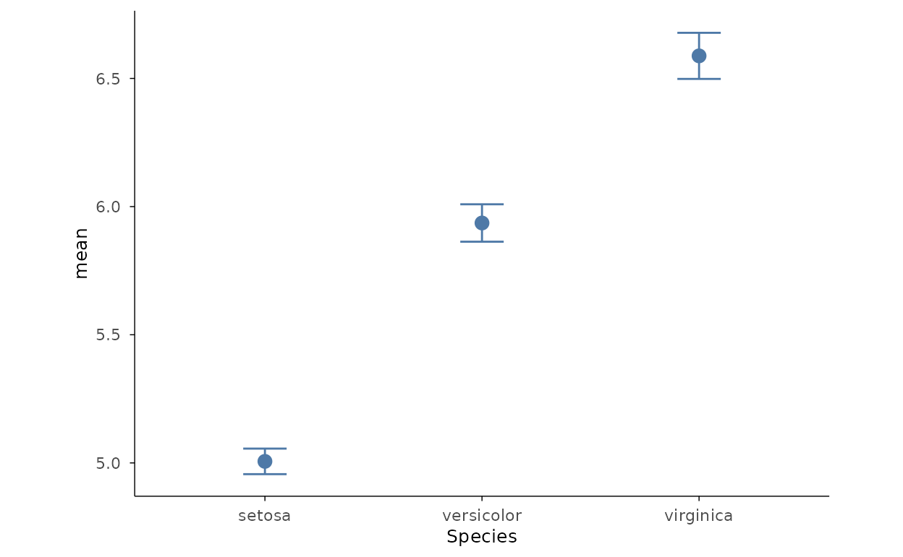